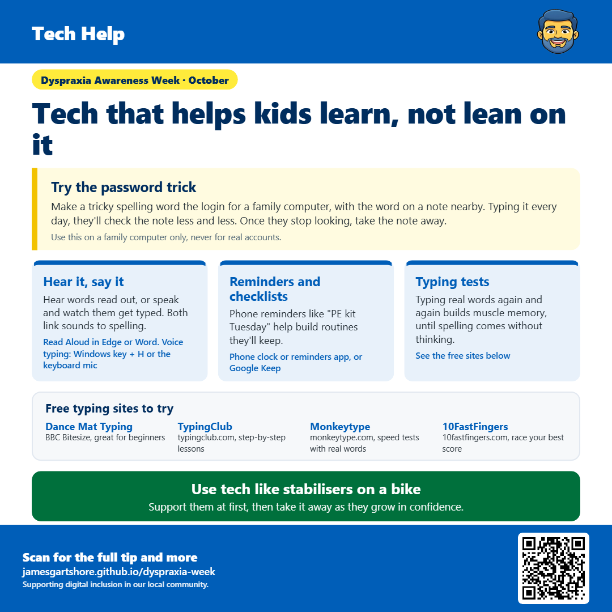

Tech that helps kids learn, not lean on it
In short
- Hear it, say it: Hear words read out, or speak and watch them get typed. Both link sounds to spelling. (Read Aloud in Edge or Word. Voice typing: Windows key + H or the keyboard mic)
- Reminders and checklists: Phone reminders like "PE kit Tuesday" help build routines they'll keep. (Phone clock or reminders app, or Google Keep)
- Typing tests: Typing real words again and again builds muscle memory, until spelling comes without thinking. (See the free sites below)

Hi everyone, this week is Dyspraxia Awareness Week, so I wanted to share some ways technology can help children with dyspraxia. The idea is to use tech to help them learn, rather than something they end up relying on.
Dyspraxia affects coordination and movement, and it can make things like handwriting, spelling and staying organised harder. The good news is that phones and computers have lots of free tools that can help, as long as they're used in the right way.
One simple trick for spelling is to make a word your child finds tricky the login password for a family computer, with the word written on a note nearby. Because they type it every day, they'll start checking the note less and less, until one day they don't need it at all. Then take the note away and pick a new word. Only do this on a family computer, never for email, banking or any real accounts, as a single word is easy to guess.
Hearing words can help too. Microsoft Edge and Word both have a free Read Aloud feature that reads text out while highlighting each word, so children can follow along. It also works the other way round. With voice typing, they can say a word and watch it appear on screen, which helps link how a word sounds to how it's spelt. On a Windows computer, press the Windows key and H together, and on a phone, tap the microphone on the keyboard.
Typing is often easier than handwriting for children with dyspraxia, and typing tests are a great way to practise. Because they use real words, typing them over and over builds muscle memory, until spelling them comes naturally without thinking. BBC Bitesize Dance Mat Typing is great for beginners, TypingClub has free step-by-step lessons, and Monkeytype and 10FastFingers let older children test their speed and try to beat their best score.
Staying organised can be a challenge too, and phone reminders and simple checklists can help children build routines, like a reminder for PE kit on a Tuesday. Over time, many find they remember without needing the reminder.
The best way to think of it is like stabilisers on a bike. Use the tech to support them at first, then gradually take it away as their confidence grows.
If you'd like help setting any of this up, just comment below and I'll do my best to help.
I hope this helps, and feel free to pass it on to anyone who might find it useful.